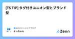
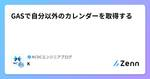
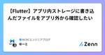
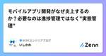
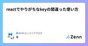
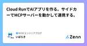
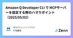
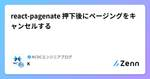
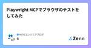

NCDCエンジニアブログのフィード
https://zenn.dev/p/ncdc
NCDC株式会社( https://ncdc.co.jp/ )のエンジニアチームです。 募集中のエンジニアのポジションや、採用している技術スタックの紹介などはこちら( https://github.com/ncdcdev/recruitment )をご覧ください！ ※エンジニア以
フィード

[TS TIP] タグ付きユニオン型とブランド型
NCDCエンジニアブログのフィード
最初に業務でも取り入れやすいtypescriptの魅力を活かせるtipシリーズです。今回はタイトルにもある通り、タグ付きユニオン型・ブランド型について触れていきます。基本的にはコードベースで解説を行い、最後には2つの型を組み合わせた場合の実践例もまとめています。では始めます。 タグ付きユニオン型とはタグ付きユニオン型（Tagged Union Types）は、異なる型の集合（ユニオン型）に識別子（タグ）を付けることで、型の安全性と保守性を高める手法です。これは「判別可能なユニオン型（Discriminated Unions）」とも呼ばれます。 タグ付きユニオン型の活...
5時間前

GASで自分以外のカレンダーを取得する
NCDCエンジニアブログのフィード
要点自分以外のカレンダーは、カレンダーIDによって取得するconst calendar = CalendarApp.getCalendarById('カレンダーID');Googleカレンダーの他のカレンダーに、取得対象カレンダーを追加している必要があるカレンダーの参照権限があっても、他のカレンダーに未追加だと取得できない他のカレンダーで取得対象カレンダーを追加するには、参照権限が付与されている必要があるGoogle Workspaceで管理されているアカウントの場合、組織全体の設定も影響している 取得方法カレンダーIDによって取得します。取得で...
15時間前

【Flutter】アプリ内ストレージに書き込んだファイルをアプリ外から確認したい
NCDCエンジニアブログのフィード
path_providerライブラリで、アプリ内ストレージにファイルを保存する際、デバッグ時などにアプリ外から参照・確認したい場合はどうしたらいいのか、とふと思ったので調べてみました。※ ここで検証として使用する処理は、以下の数行だけです。final appDir = await getApplicationDocumentsDirectory(); // ← path_providerの関数final file = File('${outputDir.path}/log.txt');await file.writeAsString('ログの内容'); path_prov...
15時間前

モバイルアプリ開発がなぜ炎上するのか？必要なのは進捗管理ではなく"実態管理"
NCDCエンジニアブログのフィード
システム開発において、「炎上」は珍しい話ではありません。その中でも特に、モバイルアプリ開発は計画通りに進めていたはずが、気づけば納期直前に大炎上といった光景は少なくありません。進捗上ではオンスケに見えていたのに、実際には大幅な遅延や品質問題が隠れていた。このギャップこそが、モバイルアプリ開発を炎上させる最大の要因です。※炎上の定義はQCDのいずれか、あるいは複数が当初想定より大幅に劣後することとします。モバイルアプリ開発においては、単なる進捗管理では不十分です。必要なのは、「実態」を正確に把握し、早期に手を打つことです。この記事では、なぜモバイルアプリ開発が炎上しやすいのか...
5日前

reactでやりがちなkeyの間違った使い方 1
1
NCDCエンジニアブログのフィード
なぜkeyが必要なのかkeyがない状態はデスクトップ上のファイルに名前がないようなもので、ファイルを1番目、2番目と管理するようなものらしいです。keyを設定することで並べ替えがあってもその項目を認識してそこだけ再レンダリングします。もし設定していない場合はエラーが出ますが、このときには便宜的にインデックスを指定していると公式ドキュメントにありました。Each child in a list should have a unique "key" prop.ですが、この後書いているようにkeyにインデックスを指定するのはパフォーマンス低下やバグに繋がるのでエラーを表示していま...
6日前

Cloud RunでAIアプリを作る。サイドカーでMCPサーバーを動かして連携する。 1
NCDCエンジニアブログのフィード
GW暇だったので、Cloud RunでAIチャットアプリを作ってみました。それだけだと普通すぎるのでサイドカーでMCPサーバーを動かして連携できるようにしてみました。セキュリティ的に懸念も多いMCPサーバーですが、自社アカウントのクラウド上に閉じて構築すれば安心して使えるのではないかと思った次第です。Cloud Runならコンテナアプリを簡単にデプロイ出来ますし、生成AIはVertex AIを使えばGoogle Cloudに閉じた構築が可能です。 サイドカーとは？こういうやつです。(この図はChatGPT製です)つまり、サイドカーというのはメインとなるコンテナをサポートする...
8日前

Amazon Q Developer CLI で MCPサーバーを設定する際のハマりポイント（2025/05/02）
NCDCエンジニアブログのフィード
はじめにこんにちは。NCDC株式会社ITコンサルタントの藏原です。MCPによって、いよいよ生成AIのビジネス利用範囲が広がってきましたね。Amazon Q Developer CLIが、v1.9.0からMCPサーバーを使えるようになりました。そこで、MCPサーバーを設定する際に遭遇した問題と解決策について共有します。この記事は2025年5月2日時点の情報に基づいています。 前提条件AWS Builderアカウントが必要ですAWSのホームページ を参考に、Homebrewを使用してインストールを行います$ brew install amazon-q 主な課題...
12日前

react-pagenate 押下後にページングをキャンセルする
NCDCエンジニアブログのフィード
はじめにreact-pagenateは、React上でページングUIを実装するためのライブラリです。このライブラリでページングアイテムを押下後、特定の条件であればページングをキャンセルする処理を実装します。 実装方法挙動に関連する実装のみ記載します。const handleClick = (event: { index: number | null; selected: number; nextSelectedPage: number | undefined; event: object; isPrevious: boolean; isNext: ...
13日前

Playwright MCPでブラウザのテストをしてみた 1
NCDCエンジニアブログのフィード
はじめにPlaywrightは、Microsoftが開発したブラウザ自動化ツールで、実際のブラウザを動かしたE2Eテストができます。こちらはaiに書いてもらったサンプルコードで、googleでcatと検索したときの挙動をテストするコードです。test('Googleで「cat」を検索', async ({ page }) => { // googleの検索ページに移動 await page.goto('https://www.google.com'); // 「cat」と入力してEnter await page.fill('input[name="q"...
14日前

おばあちゃんから無限にお年玉を貰うMCPサーバーを作ってみた
NCDCエンジニアブログのフィード
とりあえず、こちらをご覧ください。GitHub Copilotのエージェントから無限に呼び出され続けるMCPサーバーが作れてしまいました。!これはMCPサーバーのセキュリティに関する記事です。作成したMCPサーバーはAgentのよくない動きを誘発するので公開しません。実際におばあちゃんから無限にお年玉をもらう行為はやめましょう。 何がおきているか？Copilotくんが無限ループしています。なぜ無限ループするのでしょうか？GitHub CopilotのAgentがどう作られているかによるので正確なところは分かりませんが、おそらくAgentが物事を「忘れる」...
20日前
【Flutter】スマホのシステム言語設定に対応してWidgetやテキストを多言語化する
NCDCエンジニアブログのフィード
Flutter アプリの多言語対応について、動作確認しながら調査してみました。【flutter doctor】[✓] Flutter (Channel stable, 3.22.0, on macOS 14.0 23A344 darwin-arm64, locale ja-JP)[✓] Android toolchain - develop for Android devices (Android SDK version 33.0.2)[✓] Xcode - develop for iOS and macOS (Xcode 15.2)[✓] Chrome - develop f...
21日前
Streamlitを使ったPythonアプリに認証を付けてAWSにデプロイする
NCDCエンジニアブログのフィード
はじめにStreamlitというライブラリを使ったPythonアプリをAWSにデプロイする手順についてわかりやすくまとめてくださっている、ありがたい記事があります。https://qiita.com/minorun365/items/84bef6f06e450a310a6a上記記事の通りにデプロイしたあと、次のステップとして以下が挙げられていたので取り組んでみました。Route 53などで独自ドメインを取得し、ACMの証明書をALBに設定してHTTPSで暗号化通信できるようにする。Cognitoで認証機能を導入して、セキュリティグループによるソースIP制限を不要にする。...
24日前
アプリストアからの削除、さらにアカウント削除に関する実践ガイド
NCDCエンジニアブログのフィード
アプリケーションのライフサイクルには、サービス終了、買収による統合、ピボットによる旧アプリの廃止、サポート終了など、公開停止や完全削除が必要な場面があります。これは独立アプリでも企業内アプリでも同様です。ここでは、Apple App Store と Google Play Store における具体的な手順を見ていきます。各ストアのオフィシャルドキュメントの内容が多少難解であり、停止ではなく、完全削除する手段が読み取れなかったため、こちらでまとめています。またさらには、アカウント自体削除したい際の手順も載せます。 🍎 Apple App Storeの手順 一時的な公開停止（...
1ヶ月前
AWS障害が発生したアベイラビリティーゾーン「apne1-az4」ってどこ？
NCDCエンジニアブログのフィード
はじめに日本時間で4/15の夕方頃にAWS障害が東京リージョンで発生しました。影響確認の為ににAWS Health Dashboardを読んでいました。https://health.aws.amazon.com/health/status#ec2-ap-northeast-1_1744704914しかし、1行目から疑問が生じました。午後 4:40 から午後 5:43 (日本時間) の間、AP-NORTHEAST-1 リージョンの単一のアベイラビリティーゾーン (apne1-az4) において、一部の EC2 インスタンスへの接続の問題が発生しました。👀「apne1-az...
1ヶ月前
Figma オートレイアウトはDev Mode CSSにどう反映されるか
NCDCエンジニアブログのフィード
はじめにFigma オートレイアウトは、フレームに含まれるオブジェクトを自動配置できる機能です。Figma上で余白や配置を一括指定することが可能となり、よりCSSに近い定義が可能となりました。この記事では、オートレイアウトがDev Mode（開発モード）のCSS表示にどのように反映されるかを記述します。 共通オートレイアウトを設定すると、Dev ModeのCSSでは常にflexが指定されます。display: flex; サイズ変更（幅・高さ） 固定WやHの右プルダウンから幅/高さを固定を選択すると、コンテンツにかかわらず固定のサイズとなります。Dev ...
1ヶ月前
issueの議論をCopilotにドキュメントにしてもらう。[作業メモ]
NCDCエンジニアブログのフィード
やりたかったことGitHubのissueで仕様や設計について議論を行うことは多いですが、その内容をドキュメント化するには以下の課題があります：ドキュメント作成・メンテナンスの工数が大きいドキュメント更新が漏れることがある議論内容とドキュメントの整合性を保つのが難しいこれらの課題を解決するため、GitHub Copilotを活用して議論内容を効率的にドキュメント化する方法を模索しました。 やったことGitHubのMCPサーバーをVSCode Copilotから呼び出すフォーマットなどを指定してドキュメントにしてもらう 手順 GitHubのMCPサーバー...
1ヶ月前
AWS IoT EventsでGreengrassを監視する
NCDCエンジニアブログのフィード
はじめにAWSを使ってIoTのシステムを作るときに、エッジPCにGreengrassをインストールすることはよくあると思います。実際に運用をはじめてみるとエッジPCというものは大抵手元を離れるので、何かあったときに「そもそも起動しているのこいつ？」というのが判断できない事が多いです。AWSのGreengrassのコンソール上だと以下の画面キャプチャのようにGreengrassデバイスが報告するステータスとその時間が表示されます。しかし、この情報は基本的にデバイスが起動したときの情報が表示されるので、正常起動後にデバイスが終了した場合は状況の判断ができません。エッジPCを監視す...
1ヶ月前
【Flutter】カバレッジ測定対象外のファイルもカバレッジレポートに含めたい
NCDCエンジニアブログのフィード
はじめにお馴染みのflutter test --coverage コマンド。デフォルトでは、test/配下のテストコードが実行された際に、直接または間接的に実行されたコードがカバレッジ計測の対象となります。例えば、import 記載のファイルに対してのテストコードが一切書いていない場合、カバレッジは 0%となります。import 'package:hoge/utils/sample1.dart';import 'package:flutter_test/flutter_test.dart';void main() { // import されているファイルに対し...
1ヶ月前
Instagramリール風動画機能を付けたいときに考えること
NCDCエンジニアブログのフィード
toC向けアプリで、InstagramやTikTokのような動画投稿・連続再生機能を実装したいというご要望をよく頂くことがあります。その際、ただ単純に動画をアップロードして、アップロードした動画を読み込ませただけでは、あのようなスムーズにさくさく動くユーザー体験は手に入れられません。スワイプ操作に追従するスムーズな動画再生は、高度な技術によって実現されており、以下のようなことを採用しなければなりません。 1. 動画アップロード時の最適化動画圧縮：ユーザーが撮影した動画は、そのままではファイルサイズが大きく、再生時のパフォーマンスに悪影響を与えます。H.264やH.26...
1ヶ月前
Azure Machine Learning Studio で突然推論が失敗…サポートに問い合わせたらバグでしたという話
NCDCエンジニアブログのフィード
こんにちは！最近、とあるプロジェクトで 初めて Azure を触る機会に恵まれまして。「Azureって美味しいの？」状態からスタートし、Azureの波に揉まれながらなんとか浮かんでます🏄♂️💦そんな中で出会ったのが、Azure Machine Learning（以下 AML）Studio で推論ができない問題。「設定ミスか？」「コードが悪い？」「色々ググった！でも動かない！」……と沼にハマり続けた結果、最終的に Microsoft サポートから「それ、バグですね😊」と言われたお話です。同じようにAMLで奮闘している方のヒントになったり、「Azureってたまにこういうことある...
1ヶ月前